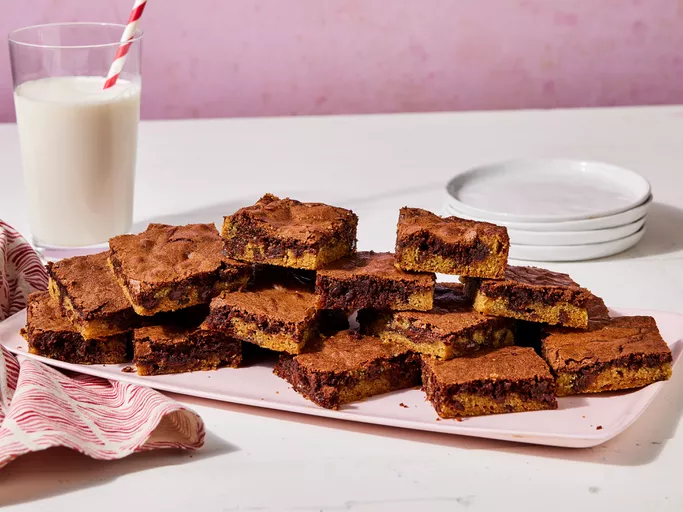

Brownie

Description
This brookie recipe was inspired by a co-worker who couldn't decide if she wanted brownies or chocolate chip cookies for her birthday treat. Since she said I should just pick one, I thought this up on the way home. I couldn't find a recipe like it on Allrecipes, so I created it. These brookies go quickly; I usually make a double batch in a jelly roll pan.
Ingredients
Cookie Layer:
- 1/2 cup butter, softened
- 1/2 cup light brown sugar
- 1/4 cup white sugar
- 1/2 teaspoon vanilla extract
Brownie Layer:
- 1 cup white sugar
- 1/2 cup butter, melted
- teaspoon vanilla extract
- 2 eggs
Directions
- Gather all Ingredients
- Preheat the oven to 350 degrees F (175 degrees C). Grease a 9x13-inch baking dish.
- Prepare cookie layer: Beat 1/2 cup butter, 1/2 cup brown sugar, 1/4 cup white sugar, and 1/2 teaspoon vanilla in a large bowl until creamy. Add one egg; beat until light and creamy, about 2 minutes.